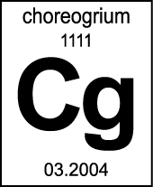

< CURRENT > < PROJECTS : PLACES : PRODUCTS > < PROFILE : CONTACT >
XØ PROJECTS INC PRESENTS

[Cg] 4 x = Na1 Ni4 Pu1 Uuu2
Individual Experiments of Elemental Movement
PERFORMANCES BY < karinne keithley : nora stephens : rebecca davis : ursula eagly >
Fri-Sat 12-13 March 2004, 7:30p & 9:30p at < the old american can factory >
admission $10 : RUNS APPX 50 MIN : RESERVATIONS ENCOURAGED < RESERVATIONS >
< PROGRAM PDF 165 kb > < PRESS RELEASE PDF 165 kb > < POSTER 11x8 PDF 300 kb > < POSTCARD PDF 750 kb >
..................................................................................
[1] KARINNE KEITHLEY | Now I'll Tell You Something About Salt
Information about salt made pressing by the concerns of a certain fish, is told, with minor interruptions, and sung along with a glimpse of a fish dance. This is a performed accumulation of information - part of a play in progress about salt, exile, extinction, fish and a tiny, unknown country called Kevrgoranmia. Performed by Karinne Keithley.
Karinne Keithley is a choreographer, writer, teacher, sound designer, ukulelist, and co-founder of Ur, a dance palace in Brooklyn. Her work has been presented in New York at PS 122, Danspace Project, Dance Theater Workshop, Dixon Place, Galapagos and Ur, among other venues. Karinne also plays and sings in the Sisters of the Fancy Stitch Machine Uke Orkestra. She is an MFA candidate in Playwriting at Brooklyn College studying with Mac Wellman. For additional information about Karinne, please visit < WWW.FANCYSTITCHMACHINE.ORG >
<< TOP
[2] NORA STEPHENS | Minimum Speed of an Explosion
The human body is used in juxtaposition with electronic images to investigate violent releases of energy from the microscopic to the universal level. The performer's movement is initiated by constantly shifting yet progressing types of internal and external detonations. Video images of combustion are slowly revealed behind the performer. Performed by Ursula Eagly.
Nora Stephens is a choreographer, dancer, video artist, and founder of noranewdanceco. Her choreographic work has been presented in New York at Joyce Soho's Dancenow Festival, the Construction Company, the Mulberry Street Theatre's Newsteps series, WAX and the Brooklyn Museum, among other venues. Her video works have been screened at the American Dance Festival in Durham, NC; Le Quinto Festival Internacional Video Danza in Buenos Aires; and most recently in collaboration with choreographer Kate Corby in “While I Wait” presented at Community Space 848 in San Francisco. Nora also performs with Rebecca Davis, Beth Soll & Co and Mandy Morrison/mandymachine. She received a BS in InterArts & Technology from the University of Wisconsin at Madison in 2000.
<< TOP
[3] REBECCA DAVIS | Migration to the Edge of Supersaturation
Inspired by the chemical process of supersaturation and its role in decompression illness, aka "the bends", this work explores every day social pressures which can cause a metaphorical condition of the bends. An inflatable costume and sound score of escalating breath contribute to the poignant and humorous portrait of one woman's unraveling psyche. Performed by Nora Stephens.
Rebecca Davis is a choreographer, curator, dancer, costume designer, and founder/curator of the Brooklyn Museum of Art's bi-annual Dance Forum series. Her choreographic work has been presented in New York at Joyce Soho Presents, Movement Research at Judson Church, WAX, HERE Arts Center, Hope Street Gallery, and DUMBO Dance Festival among other venues. Rebecca has performed as a dancer in works by Juliette Mapp, mandymorrison/mandymachine, noranewdanceco, Stephanie Lazzara, and Ansley Vandenbroucke, and designed costumes for Summer Morgan, Jessica Morgan, De Facto Dance, and noranewdanceco. She received a BFA in Dance from the University of Wisconsin at Madison in 2000.
<< TOP
[4] URSULA EAGLY | Superheavy Western
This work is a pseudo-lecture that investigates the creation of Unununium, element 111 on the periodic table, using an overhead projector to create visual environments for the performers. In several images, unicorn silhouettes represent the elusive new element, thereby conflating science and mythology. Similarly, pictures of the American frontier and bluegrass music draw a comparison between the Wild West and the scientific race to discover Unununium. Performed by Rebecca Davis & Ursula Eagly.
Ursula Eagly uses outdated technology and updated storytelling to make dances. Her work has been presented in New York at Galapagos Art Space, Movement Research at the Judson Church, OfficeOps and Ur, among other venues. Since moving to New York, she has been supported by a Topaz Arts Dance Residency and by the Queens Council on the Arts, which is funding her current project—an evening-length quartet involving Belgian waffles and the kid’s game “Telephone”. She graduated from Princeton University in 1999 where she was awarded the Francis LeMoyne Page Theater Award and the Class of 1955 Grant for her work in dance.
<
< TOP
..................................................................................
For additional information please write to < MAIL@XOPROJECTS.COM >
Please note that formatting attributes, icons and images may be interpreted visually by your computer and monitor differently than intended.
© 2004:2009 XØ PROJECTS INC ALL RIGHTS RESERVED | 01 Jan 2009 11:00:31 -0500